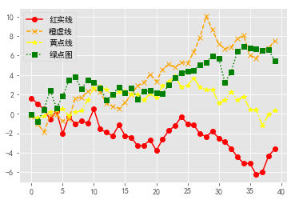
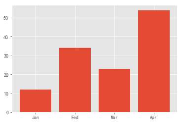
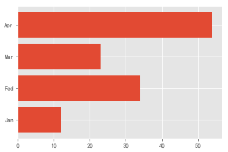
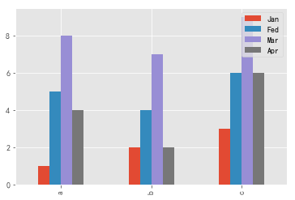
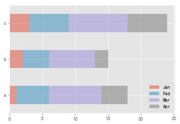
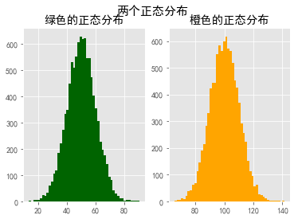
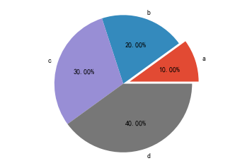
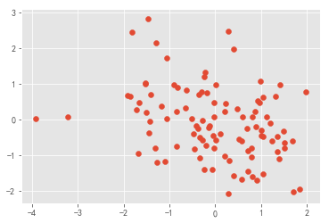

Matplotlib是一个强大的Python绘图和数据可视化的工具包。数据可视化也是我们数据分析的最重要的工作之一，可以帮助我们完成很多操作，例如：找出异常值、必要的一些数据转换等。完成数据分析的最终结果也许就是做一个可交互的数据可视化。
安装方式：pip install matplotlib
引用方法：import matplotlib.pyplot as plt
import numpy as np
import pandas as pd
from numpy.random import randn
import matplotlib.pyplot as plt
# 一般使用下面的这个语句设置字体,不然会乱码
plt.rcParams['font.sans-serif'] = ['SimHei']
plt.rcParams['axes.unicode_minus'] = False| 函数 | 说明 |
|---|---|
| plt.plot(x,y,fmt) | 坐标系 |
| plt.boxplot(data,notch,position) | 箱型图 |
| plt.bar(left,height,width,bottom) | 柱状图 |
| plt.barh(width,bottom,left,height) | 横向柱状图 |
| plt.polar(theta,r) | 极坐标系 |
| plt.pie(data,explode) | 饼图 |
| plt.psd(x,NFFT=256,pad_to,Fs) | 功率谱密度图 |
| plt.specgram(x,NFFT=256,pad_to,F) | 谱图 |
| plt.cohere(x,y,NFFT=256,Fs) | X-Y相关性函数 |
| plt.scatter(x,y) | 散点图 |
| plt.step(x,y,where) | 步阶图 |
| plt.hist(x,bins,normed) | 直方图 |
| 方法 | 描述 |
|---|---|
| plt.title() | 设置图像标题 |
| plt.xlabel() | 设置x轴名称 |
| plt.ylabel() | 设置y轴名称 |
| plt.xlim() | 设置x轴范围 |
| plt.ylim() | 设置y轴范围 |
| plt.xticks() | 设置x轴刻度 |
| plt.yticks() | 设置y轴刻度 |
| plt.legend() | 设置曲线图例 |
# 修改背景为条纹
plt.style.use('ggplot')
np.random.seed(1)
# 使用numpy的累加和，保证数据取值范围不会在（0，1）内波动
plot_data1 = randn(40).cumsum()
plot_data2 = randn(40).cumsum()
plot_data3 = randn(40).cumsum()
plot_data4 = randn(40).cumsum()
plt.plot(plot_data1, marker='o', color='red', linestyle='-', label='红实线')
plt.plot(plot_data2, marker='x', color='orange', linestyle='--', label='橙虚线')
plt.plot(plot_data3, marker='*', color='yellow', linestyle='-.', label='黄点线')
plt.plot(plot_data4, marker='s', color='green', linestyle=':', label='绿点图')
# loc='best'给label自动选择最好的位置
plt.legend(loc='best')
plt.show()
# 柱状图
data = [12,34,23,54]
labels = ['Jan','Fed','Mar','Apr']
plt.xticks([0,1,2,3],labels) # 设置x轴刻度
plt.bar([0,1,2,3],data) <BarContainer object of 4 artists>
# 横向柱状图
data = [12,34,23,54]
labels = ['Jan','Fed','Mar','Apr']
plt.yticks([0,1,2,3],labels)
plt.barh([0,1,2,3],data) <BarContainer object of 4 artists>
# DataFrame数组图
df = pd.DataFrame({
'Jan':pd.Series([1,2,3],index=['a','b','c']),
'Fed':pd.Series([4,5,6],index=['b','a','c']),
'Mar':pd.Series([7,8,9],index=['b','a','c']),
'Apr':pd.Series([2,4,6],index=['b','a','c'])
})
df.plot.bar() # 水平柱状图，将每一行中的值分组到并排的柱子中的一组
df.plot.barh(stacked=True,alpha=0.5) # 横向柱状图，将每一行的值堆积到一起<matplotlib.axes._subplots.AxesSubplot at 0x1dcc7928940>

# 修改背景为条纹
plt.style.use('ggplot')
mu1, mu2, sigma = 50, 100, 10
# 构造均值为50的符合正态分布的数据
x1 = mu1 + sigma * np.random.randn(10000)
# 构造均值为100的符合正态分布的数据
x2 = mu2 + sigma * np.random.randn(10000)
fig = plt.figure()
ax1 = fig.add_subplot(121)
# bins=50表示每个变量的值分成50份，即会有50根柱子
ax1.hist(x1, bins=50, color='darkgreen')
ax2 = fig.add_subplot(122)
ax2.hist(x2, bins=50, color='orange')
fig.suptitle('两个正态分布',fontweight='bold', fontsize=15)
ax1.set_title('绿色的正态分布')
ax2.set_title('橙色的正态分布')
plt.show()
plt.pie([10,20,30,40],labels=list('abcd'),autopct="%.2f%%",explode=[0.1,0,0,0])
plt.axis("equal")
plt.show()
import random
x = np.random.randn(100)
y = np.random.randn(100)
plt.scatter(x,y)<matplotlib.collections.PathCollection at 0x1dcc9f30f28>
plt.savefig(filename.拓展名)
| 参数 | 说明 |
|---|---|
| fname | 含有文件路径的字符串或者Python的文件型对象。 |
| dpi | 图像分辨率，默认为100 |
| format | 显示设置文件格式("png","jpg","pdf","svg","ps",...) |
| facecolor、edgecolor | 背景色，默认为"W"(白色) |
| bbox_inches | 图表需要保存的部分。设置为”tight“，则尝试剪除图表周围空白部分 |
文件类型是通过文件扩展名推断出来的。因此，如果你使用的是.pdf，就会得到一个PDF文件。
savefig并非一定要写入磁盘，也可以写入任何文件型的对象，比如BytesIO：
from io import BytesIO
buffer = BytesIO()
plt.savefig(buffer)
plot_data = buffer.getvalue()